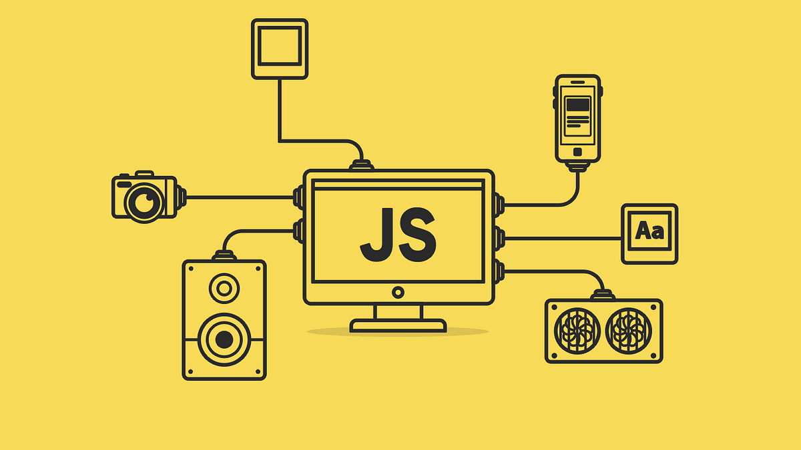

اسم الطالب: محمود ياسر محمود محمد الفقي
الرقم الجامعي: 2500068
المقرر: تطبيقات الإنترنت والمنصات الإلكترونية
هي لغة برمجة يستخدمها المطورون في بناء صفحات ويب تفاعلية. بداية ً منتحديث مواجز الوسائط االجتماعية وحتى عرض الرسوم المتحركة والخرائط التفاعلية، يمكن أن تحسّن تجربة مستخدم وقع الويب. ونظرً ا ألنها لغة برمجة نصية JavaScript لوظائف من طرف العميل، فإنها تعد واحدة من التقنيات األساسية في شبكة الويب العالمية. على سبيل المثال، عندما ترى أثناء تصفح اإلنترنت عرضًا دوّ ارً ا للصور، أو قائمة ً منسدلة ً بطريقة انقر ميكيًا في ألوان العناصر على صفحة ويب ، فكل هذا من تأثيرات للعرض، أو تغيرً ا دينا JavaScript
باختصار: أي شيء له علاقة بالويب تقريبًا. وبتفصيل أكثر، وترتيبها تقريبًا حسب ما ستقابله أثناء رحلتك :)، البحث الفوري، modals صفحات ويب تفاعلية. التحقق من النماذج، القوائم المنسدلة، النوافذ المنبثقة ( والسحب واإلفالت. تطبيقات كاملة تُعرض - Linear و Notion و Figma و Gmail ). مثل SPA تطبيقات الصفحة الواحدة ( . Svelte أو Vue أو React وتُحدَّث عبر جافا سكريبت، غالبًا باالعتماد على إطار عمل مثل أو Node.js والخدمات اللحظية، وتُبنى باستخدام GraphQL و REST خوادم الواجهة الخلفية. واجهات Express أو Fastify أو NestJS . ، وأدوات الفحص مثل webpack و esbuild و Vite أدوات البناء والتطوير. محزّمات الكود مثل ESLint ومشغّالت االختبارات مثل ، Vitest و Jest . Slack و VS Code (مثل Electron تطبيقات متعددة المنصات. تطبيقات سطح المكتب عبر . React Native )، وتطبيقات الهاتف عبر Discord وفي الماضي، كانت صفحات الويب ثابتة، كصفحات الكتاب. وكانت الصفحة الثابتة تعرض المعلومات في كتقنية JavaScript تخطيط ثابت، ولم تكن تفعل كل ما نتوقعه اآلن من أي موقع ويب حديث. وظهرت يمكن ،JavaScript من جانب المتصفح إلضفاء مزيدٍ من الديناميكية على تطبيقات الويب. وباستخدام للمتصفحات االستجابة لتفاعل المستخدم وتغيير تخطيط المحتوى على صفحة الويب. مكتبات وأ ُطر عمل وممارسات برمجة وبدؤوا في JavaScript ومع تطور اللغة، أنشأ مطورو للتطوير من طرف العميل ومن JavaScript استخدامها خارج متصفحات الويب. واليوم، يمكن استخدام م طرف
تعمل جميع لغات البرمجة من خالل ترجمة بناء جملة شبيه باللغة اإلنجليزية إلى تعليمة برمجية لآللة، على نطاق واسع باعتبارها لغة برمجة JavaScript ويقوم نظام التشغيل بعد ذلك بتشغيلها. وتُصنف البرمجية هي تعليمة مفسَّرَة، بمعني أنها تُترجم مباشرةً إلى JavaScript نصية أو لغة مفسَّرَة. تعليمة . وباستخدام لغات برمجة أخرى، JavaScript التعليمة البرمجية األساسية للغة اآللة من خالل محرك يقوم المحول البرمجي (المترجم) بتحويل التعليمة البرمجية بالكامل إلى تعليمة برمجية لآللة في خطوة منفصلة. ومن ثمّ، فإن جميع لغات البرمجة النصية هي لغات برمجة، ولكن ليست كل لغات البرمجة هي لغات بر
JavaScript هو برنامج حاسوبي يشغّل تعليمة JavaScript محرك JavaScript األولى كانت عبارة عن أدوات تفسير (مترجمين)، إال أن جميع المحركات الحديثة تستخدم التحويل في الوقت المناسب أو تحويل وقت التشغي
JavaScript من جانب العميل إلى طريقة عمل JavaScript تشير موجودًا داخل التعليمة البرمجية للمتصفح. تأتي جميع متصفحات الويب JavaScript يكون محرك . JavaScript الرئيسة مضمّن بها محركات البرمجية بوظائف مختلفة مرتبطة بأحداث مختلفة، JavaScript ويكتب مطورو تطبيقات الويب تعليمة . CSS و HTML مثل النقر بالماوس أو تمرير الماوس. وتقوم هذه الوظائف بإجراء تغييرات ع
خطوات العمل من جانب العميل:
يشير هذا المصطلح إلى استخدام JavaScript في منطقة الخادم بالواجهة الخلفية. يوضع محرك JavaScript على الخادم، ويمكن للتعليمات البرمجية الوصول إلى قاعدة البيانات وتنفيذ عمليات منطقية والاستجابة للأحداث والطلبات. وتتيح هذه الطريقة تخصيص استجابة موقع الويب وفقًا لمتطلبات المستخدم وحقوق الوصول.
| وجه المقارنة | من جانب العميل | من جانب الخادم |
|---|---|---|
| مكان التشغيل | داخل متصفح المستخدم | على الخادم |
| طريقة إنشاء المحتوى | تحديث محتوى صفحة الويب داخل المتصفح | إنشاء محتوى باستخدام منطق التطبيق والتعامل مع قاعدة البيانات |
| الوصول إلى الموارد | يقتصر على الموارد التي يتيح المتصفح الوصول إليها | يمكنه الوصول إلى موارد جهاز الخادم حسب الحاجة |
| مثال على الاستخدام | التفاعل مع الأزرار وتحديث عناصر الصفحة | معالجة طلبات المعلومات والتعامل مع قواعد البيانات |
يوضح الشكل التالي بصورة مبسطة كيف يتفاعل المستخدم مع صفحة الويب، وكيف تعالج JavaScript الحدث ثم يتغير المحتوى المعروض.

إعداد الطالب: محمود ياسر محمود محمد الفقي — 2500068